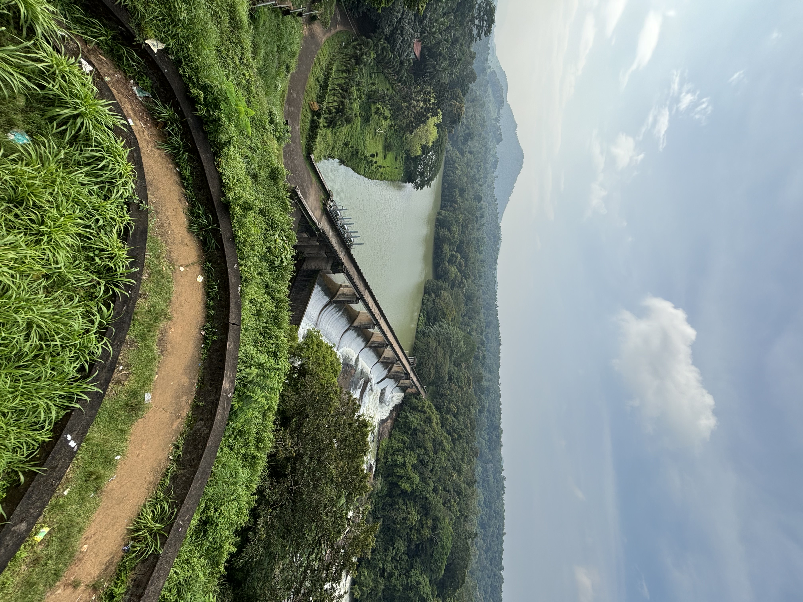
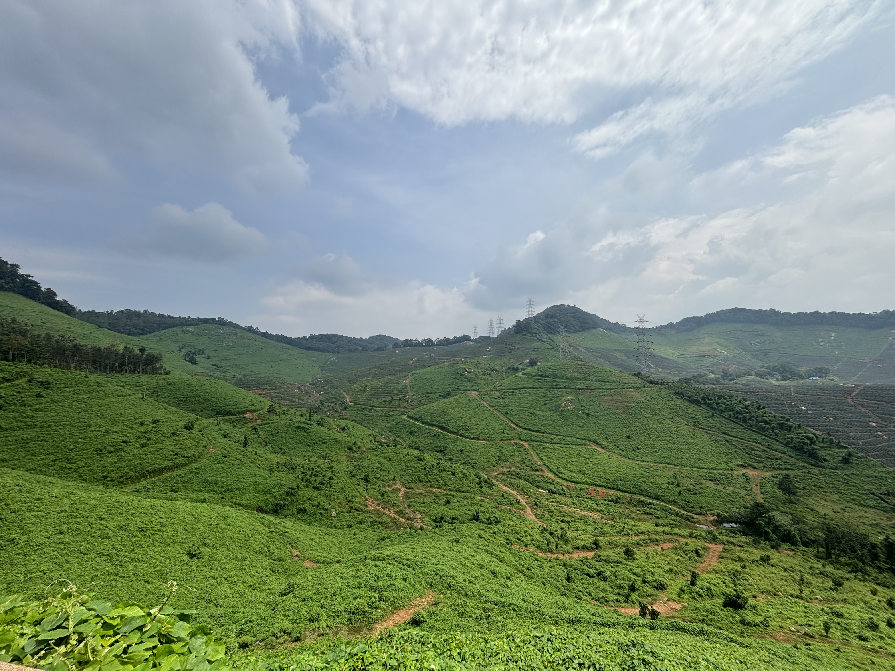
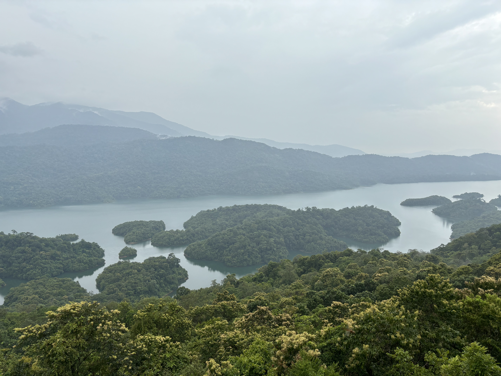

The Kulamavu Dam is a significant dam located in the Indian state of Kerala. It is part of the Idukki Hydroelectric Project, which is one of the largest hydroelectric projects in Kerala. The dam is constructed across the Periyar River and is situated near the town of Idukki. The construction of the Kulamavu Dam was initiated as part of the broader Idukki Hydroelectric Project in the 1960s. The primary purpose of the dam is to generate hydroelectric power. The reservoir formed by the dam, known as the Kulamavu Reservoir, has a substantial storage capacity, which aids in power generation and irrigation purposes in the region. The Idukki Hydroelectric Project consists of multiple dams and power stations, with the Kulamavu Dam being one of the key components. It has contributed significantly to the power generation capacity of Kerala and has helped in meeting the energy demands of the state. Besides its role in power generation, the Kulamavu Dam and its reservoir also offer opportunities for tourism and recreational activities, attracting visitors with its scenic beauty and the surrounding lush greenery.

Thenmala lookout point is one of the major stopping points on the way to Thenmala dam and other attractions. What you can see from the lookout tower here is the Kallada river and an aerial view of the forest around.This place is named Ottakkal and is one of the major point of Kallada Irrigation Project (KIP). From here the irrigation canal branches of KIP starts. The lookout point tower is one storied with spiral staircase.You will get an aerial view of the weir bridge, river and a distant view of the western Ghat mountain ranges from here.
Ambanad Hills or Ambanad is a hill station in Punalur Taluk in the eastern part of Kollam district in Kerala, India. This is one among the few tea and orange plantation areas in Kollam district. Ambanad Hills is in Aryankavu panchayath, about 12 km away from Kazhuthurutty. The place is a famous tourist destination in South Kerala and is popularly known as 'Mini Munnar'. The tea estate in Ambanad hills is set up by the British people it is the only tea estate in Kollam district. The plantation and estate is controlled and managed by Travancore Rubber and Tea Company. The estate falls in Clove belt of India (Kollam - Nagercoil) and is one of the largest Clove estate in the country.It was one of the first places in country to which East India Company introduced clove in 1800s. The crop harvesting requires skilled labour and hence every year, the migrant labourers from Tamil Nadu will stay at the estate and work for nearly a month for harvesting the clove.
Situated around 15 km profound into the woods from Aryankavu, Rosemala is one of the less explored eco tourism spots in Kerala in Kollam district. The woodland street prompting Rosemala is steep and winding. You can enjoy the quietness of a few mountain streams on your way through the thick woodland tracts. Enlisting a jeep would be the best decision to achieve Rosemala. Begin your trekking by wandering into Darbhakkulam, a lake somewhere inside Rosemala. Darbha is the name for Poa cynosuroides, a plant which has got criticalness in Hindu ceremonies. It is assumed that once this place was loaded with these plants. While in transit to Darbhakkulam watch the woodland that abounds with life and rich in biodiversity. Watch uncommon types of butterflies, mushrooms and frogs. The main attraction in Rosemala is the forest, watch tower, and the view of lake from the watch tower. The watchtower unveils the beauty of Thenmala Dam reservoir surrounded by gigantic hills. There are options for boating in the lake for that you have to get the permission from Shenduruney Wildlife Sanctuary.
